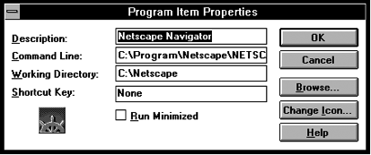
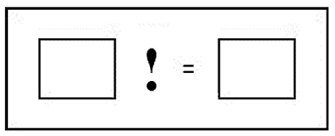
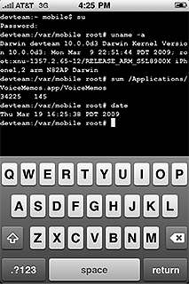

THEORY BEYOND THE CODES
Doing with Icons makes Symbols; or, Jailbreaking the Perfect User Interface
Norm Friesen
In memory of Friedrich Kittler (1943-2011)
Introduction: "Media Theories of the Unconscious"
In 1933, the Russian developmental psychologist Lev Vygotsky famously wrote that "the central fact about our psychology is the fact of mediation."[1] In so doing, Vygotsky underscored a connection between mediation and psychology -- between technologies of transmission and representation and subject formation -- that has remained central in psychological theory to this day. As Draaisma and others have shown, [2] this connection between psychology and technology has also been salient in the years before Vygotsky. As just one example, Vygotsky himself notes how Pavolov "uses the example of a telephone call" to explain the distinction between the behaviourist notions of conditioned and unconditioned reflexes.[3]
For Vygotsky, mediation takes place in the form of semiotic, cultural technologies or techniques, including "various systems for counting; mnemonic techniques; algebraic symbol systems; works of art; writing; schemes, diagrams, maps, and technical drawings; all sorts of conventional signs, and so on."[4] Vygotsky referred to all of these as "psychological tools," tools that "work upon" the mind, rather than, say, a plough or hammer, which works upon the environment. Vygotsky emphasized the importance of semiotic mediation for human development in no uncertain terms: "The internalization of cultural forms of behavior involves the reconstruction of psychological activity on the basis of sign operations. Psychological processes," Vygotsky continues, "are culturally reconstituted and developed to form a new psychological entity."[5] This new entity is one that has made a quantum leap from the realm of the animal and has entered society, culture and history: "The internalization of socially rooted and historically developed activities is the distinguishing feature of human psychology, the basis of the qualitative leap from animal to human psychology."[6]
A similar qualitative leap is to be found in Lacan's psychoanalytic account of the mirror stage, and its relation to the symbolic. The humanizing, mediating technology in this case is paradigmatically both specular and semiotic:
The jubilant assumption of his specular image by the child at the infans stage, still sunk in his motor incapacity and nursling dependence, would seem to exhibit in an exemplary situation the symbolic matrix in which the I is precipitated in a primordial form...[7]
Like Vygotsky, Lacan is providing an account of the emergence of the "I" of a "new" and fundamentally human "psychological entity" through mediation. The paradigmatic identification of one's mirror image, as Lacan explains, is an "act" that does not quickly "exhaus[t] itself, as in the case of the monkey." It is instead a "decisive turning point in the mental development of the child," one in which the human child is confronted with his or her "specular I;" or is "caught up in the lure of spatial identification."[8]
There are two moments folded into this single turning point for Lacan. The first, discussed above, is dominated by specular mediation between the child and his or her image. The second moment is mediated symbolically:
This moment in which the mirror-stage comes to an end inaugurates... the dialectic that will henceforth link the I to socially elaborated situations. It is this moment that decisively tips the whole of human knowledge into mediatization through the desire of the other [and that] constitutes its objects in an abstract equivalence... [9]
Through this turning point, nothing less than "the whole of human knowledge" enters into mediatisation in relation to "the other." In this way, despite the initial "jubilant assumption of [the] specular image," the child is thrown back from this imaginary identification to the difference and deferral that are characteristic of the symbolic. The symbolic, as Evans explains in his Dictionary of Lacanian Psychoanalysis,
is the realm of the Law ...It is the realm of culture as opposed to the imaginary order of nature. Whereas the imaginary is characterised by dual relations, the symbolic is characterised by triadic structures, because the intersubjective relationship is always 'mediated' by a third term...[10]
For Lacan as for other theorists, the decisive moments or stages of development, of humanization and differentiation, have a diachronic and developmental significance, as well as a synchronic, systemic one: "In the first place, [the mirror stage] has historical value as it marks a decisive turning-point in the mental development of the child. In the second place," Lacan continues, "it typifies an essential libidinal relationship with the body-image."[11]
Mediation and technologies of mediation, whether the sign (Vygotsky), the symbol (Piaget), or the mirror or signifier (Lacan), all play central roles in accounts of human development and activity. They are not simply metaphors enabling, say, a particular conception of memory, perception or language -- as is the case for Plato's wax tablet, Descartes' camera obscura or Chomsky's computational "language organ." Instead, media form the organizing principles for the psyche and its functions overall; they provide the pivotal moment for maturation and humanization -- the point where human development allegedly diverges decisively from the animal to the human. But in these contexts, media are not simply the basis, cause or source of psychological phenomena; they are inextricable from and in a sense even constitutive of them.
For Friedrich Kittler, the connection between media and psychological or rather, psychoanalytic phenomena is slightly different. It is exemplified in the gramophone, film and typewriter/computing machine. As Winthrop-Young and Wutz explain, these are recast by Kittler into a "media theory of the unconscious"[12] in the form of Lacan's real, imaginary and symbolic (respectively).
Only the typewriter provides writing as a selection from the finite and arranged stock of its keyboard. It literally embodies what Lacan illustrated using the antiquated letter box. In contrast to the flow of handwriting, we now have discrete elements separated by spaces. Thus, the symbolic has the status of block letters. Film was the first to store those mobile doubles that humans, unlike other primates, were able to (mis)perceive as their own body. Thus, the imaginary has the status of cinema. And only the phonograph can record all the noise produced by the larynx prior to any semiotic order and linguistic meaning. To experience pleasure, Freud's patients no longer have to desire what philosophers consider good. Rather, they are free to babble. Thus, the real -- especially in the talking cure known as psychoanalysis -- has the status of phonography.[13]
The "distinctions of Lacanian psychoanalysis," as Winthrop-Young and Wutz write, "appear as the 'theory' or 'historical effect' of the possibilities of information processing existent since the beginning of this [the 20th] century."[14] "Media and information machines," as Kittler puts it bluntly, have "culture as their independent variable."[15] However, what I want to explore here is not the machinery of a specific recording and storage medium, but the "metamedium" of the computer and its interfaces. I examine the history of these technologies specifically in the light of the relationship Kittler posits between media and psychoanalysis -- or more broadly, media and psychology -- and how they are combined and recombined in this new metamedial form.
The notion of the computer as a meta-medium is said to have originated with Alan Kay in a 1984 Scientific American article. Characterizing the computer as a "medium that can dynamically simulate the details of any other medium, including media that cannot exist physically," Kay explains:
It is not a tool, although it can act like many tools. It is the first metamedium, and as such it has degrees of freedom for representation and expression never before encountered and as yet barely investigated. Even more important, it is fun, and therefore intrinsically worth doing.[16]
As described further below, the inspiration for Kay's insight that the computer is a playful medium -- and from there, that it is one with a particularly "protean nature" -- can be traced back to his reading of McLuhan. It is therefore not surprising that another avid reader of McLuhan, Friedrich Kittler, developed a similar insight, (but without using the precise term "metamedium"), only a short two years after the appearance of Kay's article -- one that has been associated retrospectively with the term metamedium. Perhaps also unsurprisingly, Kitter's characterization is rather more ominous than Kay's:
The general digitization of channels and information erases the differences among individual media. Sound and image, voice and text are reduced to surface effects, known to consumers as interface... Inside the computers themselves everything becomes a number: quantity without image, sound, or voice... With numbers, everything goes. Modulation, transformation, synchronization; delay, storage, transposition; scrambling, scanning, mapping -- a total media link on a digital base ....[17]
These lines appear in Kittler's introduction to Gramophone, Film, Typewriter; so it would seem to follows that the Lacanian categories of the real, imaginary and symbolic may themselves also be similarly synthesized into the digitially-based medium of the computer. Precisely how this might work is is considered below.
"You have yet to become the Medium"
The history of the graphical user interface is a complex and varied one, reaching as far back NORAD's Project SAGE in the 1950's and work by Douglas Englebart and Ivan Sutherland in the 1960's. Working together with researchers at Xerox PARC in the 1970's, Alan C. Kay is often credited with having integrated some of these early innovations into an archetypal combination: Windows, icons, menu and pointing device (sometimes known as the "WIMP" interface). After being famously popularized by Steve Jobs in the Mac computer, versions of this interface have proliferated across computer screens, smart phones, tablets and many other devices. It too devolves to three basic psychological categories. The three categories that Kay proposes are related in a rather different way to technology than Lacan's are to the gramophone, film and typewriter.
In a number of texts on his work at Xerox PARC, Kay explains the importance of Jerome Bruner's interpretation of Piaget's preoperational, concrete operational and formal-operational stages.[18] Bruner translated Piaget's stages into three "mentalia" which (like Lacan's registers) are at least as much systematic and synchronous as they are diachronic and developmental. Kay explains:
Our mentalium seems to be made up of multiple separate mentalities with very different characteristics. They reason differently, have different skills, and often are in conflict. Bruner identified a separate [synchronic] mentality with each of Piaget's stages: he called them enactive, iconic, symbolic.[19]
Kay continues by reiterating these psychological categories in his own words, and linking them to user interface designs:
Now, if we agree with the evidence that the human cognitive facilities are made up of a doing mentality, an image mentality, and a symbolic mentality, then any user interface we construct should at least cater to the mechanisms that seem to be there. But how? One approach is to realize that no single mentality offers a complete answer to the entire range of thinking and problem solving. User interface design should integrate them at least as well as Bruner did...[20]
The similarity of Bruner's mentalia to Lacan's registers is salient. The enactive is physical and tactile (and like the real, effectively mute); the iconic is visual and analytic (and like the imaginary, involves gestalt configuration and recognition), and the symbolic, for both Bruner and Lacan, has abstract and systematic attributes. The similarity and opportunities for comparison extend even further when Kay, like Kittler, links these three psychological categories to corresponding technologies. For Kay, of course, these technologies are constitutive of the computer's myriad representational and interface layers:
pointer-driven elements and actions, allowing selection and deselection, scrolling and zooming, dragging and dropping;
icons, windows and menus that present and organize options for pointer-driven operations, and
the symbolic mechanisms functioning at various levels of representation in the computer.
As Kay explains, the mouse or pointer is enactive, allowing you to "know where you are [and to] manipulate" objects as you would, physically and bodily, in the "real" world. Visual interface elements (icons and windows) are iconic, allowing the user to "recognize, compare [and] configure." Programming, finally, is symbolic in its abstraction and its ability to "tie together long chains of reasoning."[21] The latter is exemplified in the object-oriented Smalltalk language that Kay -- also a pioneer in object oriented programming -- was helping to develop on around the same time.
The correspondence of these three categories and technologies with those discussed by Kittler could form the basis for an extended discussion. Kay's focus (and that of his student, D.C. Smith) is on manipulable objects, the user's "desire," visual arrays and gestalts, and symbolic programming architectures. These are combined in Kay's and Smith's work in such a was as to make engagement with the computer interface interpretable as a series of elaborate "fort-da games" -- as the site of multiple intersections of desire with the real, imaginary and symbolic.[22] But this is not my focus. I instead turn briefly to Kay's reading of McLuhan, who Kay identifies as the source of his most significant insights:
Though much of what McLuhan wrote was obscure and arguable, the sum total to me was a shock that reverberates even now. The computer is a medium! ... the most important thing about any communications medium is that ...anyone who wishes to receive a message embedded in a medium must first have internalized the medium so it can be "subtracted" out to leave the message behind. When [McLuhan] said "the medium is the message" he meant that you have to become the medium.[23]
From this realization, it is not far to Kay's further insight of the meta-medial potential of the computer. In yet another intuition of comparable insight, Kay echoes Vygotsky and Lacan in recognizing that children are uniquely well positioned to incorporate and internalize new means of mediation. For Kay, it is their concrete, ludic orientation, while for Vygotsky and Lacan, it is children's ready incorporation of specular and particularly symbolic or semiotic mediation that is paramount. As Kay puts it, if "the computer is... a medium, then it must be extended all the way into the world of the child."[24] Thinking of children as paradigmatic computer users presented Kay with opportunities and challenges that were quite different from those that were already persistent in computer engineering culture -- a world of command interfaces and computer manuals. For Kay, children as learners brought with them the genetic epistemology of Piaget and lent credence to Bruner's multiple mentalities. In using the computer, children could progress through the mentalia of the enactive, iconic and symbolic, rather than simply being told to "read the f***ing manual" ("RTFM") -- as programmers and technicians had been demanding of users since the 1950's.[25]
"Doing with Images makes Symbols"
Unlike programmers and technicians before him, Kay guided his design with the overtly welcoming formulation, "Doing with images makes symbols:"
The slogan ...implies -- as did Bruner -- that one should start with -- be grounded in -- the concrete "Doing with Images," and be carried into the more abstract "makes Symbols." ... because none of the mentalities is supremely useful to the exclusion of the others, the best strategy would be to try to gently force synergy between them in the user interface design.... [26]
Kay also provides a table showing how this linkage of the three mentalities is to occur:
| DOING
| mouse
| enactive
| know where you are, manipulate
|
| with IMAGES
| icons, windows
| iconic
| recognize, compare, configure, concrete
|
| makes SYMBOLS
| Smalltalk
| symbolic
| tie together long chains of reasoning, abstract
|
This combination of technologies, mentalities and activities ultimately points towards a type of visual-kinaesthetic computer programming, a kind of manipulation of images to produce sophisticated symbolic results. In the course of formulating this combination, Kay and Smith were the first to use the term "icon" in the sense it bears in technical contexts today. Smith (1977) in particular worked on ways in which "[c]ommunication between human being and computer [could occur] by means of visual entities called 'icons,' [which] subsum[ed] the notions of variable, reference, data structure, function, and picture."[27] In the age of "apps" for iPhone, iPad and Android devices, the icon now also subsumes the notion of the program and commodity more generally.
A relatively early graphical user interface provides an elementary illustration of what Kay meant in speaking of "doing with images makes symbols." In the "properties" dialogue box for an icon taken from a Windows 3.1 system (figure 1), doing with or clicking on an image or icon (for the Netscape Web browser) "makes" the symbols of the command line, executing the corresponding program. But Smith (and Kay) go much further than this. Smith gives examples of icons as representing alphanumeric values, functions and operations, and he shows how their changing mathematical and logical interrelationships can be schematized visually, as a part of a general visual-kinaesthetic interface for creating computer programs. He also implemented ways in which icons could be created, defined and combined for personalized mnemonic purposes.

Figure 1: "Doing with images" to "make symbols" in Windows 3.1

Figure 2: Icons expressing variables and their logical interrelationship (from Smith, 1977)
However, the above examples illustrate both the success and failure of Kay's combination of psychological orders in the metamedium of the computer. The terms mouse, icons, and windows from Kay's table, above, are all self-evidently recognizable to any computer user. This is despite the fact that these terms, thus configured, would have appeared surreally incongruous to someone walking off the street into Xerox PARC in 1976. The same can't be said, of course, for Smalltalk -- or for any other iconic or image-based programming language or technology. These remain generally unknown to this day. As a correlative, it is also clear that while everyday use of graphical user interfaces involves "doing with images" (clicking, scrolling and dragging), this visual-kinaesthetic activity typically does not result in "making symbols" -- specifically in Kay's sense of tying together long chains of abstract reasoning. We compose, manipulate and increasingly, consume symbols through the use of computer screens and interfaces, through word processors, email programs, and via browsers, tablets and readers. However, this symbolic activity does not take place through the kinaesthetic manipulation of icons; but rather, most frequently via QWERTY keyboard, a technology which long predates Kay's work. In other words, although making (or consuming) symbols dominates in computer use, it does not happen, as Kay would have it, as a result of doing with images.
It is all too tempting to conclude with Kittler and others that this result -- which renders the symbolic world isolated from and without effect on other computational and psychological functions -- represents a failure in functional terms, a kind of dysfunctionality. Users are given the illusion of control over the computer, but are actually profoundly constrained in terms of what they can do. Instead of becoming power users, they are rendered symbolically impotent, "wimps" or "idiots."[28] Assuming that Kittler's mediatic correlatives of the Lacanian real, imaginary and symbolic hold, one could go even further, and say that in being robbed of symbolic ability in this sense, the user is exiled from this all-important register or order.
In articulating a similar argument in "There is no Software," Kittler's conclusions come rather close to this extreme. Our symbolic powerlessness in the face of the computer is tantamount, he says, to the end of writing itself. In fact, Kittler identifies this juncture as having occured around the time of Kay's development of his graphical user interface (although he does not link the two explicitly):
The last historical act of writing may well have been the moment when, in the early seventies, Intel engineers laid out some dozen square meters of blueprint paper (64 square meters, in the case of the later 8086) in order to design the hardware architecture of their first integrated microprocessor. This manual layout of two thousand transistors and their interconnections was then miniaturized to the size of an actual chip, and, by electro-optical machines, written into silicon layers. [With this] our postmodern writing scene could begin.[29]
Since the early seventies, as Kittler would have it, writing with actual effect has taken place not in the analogue world of pen and paper nor in the proto-digital world of the typewriter. It has instead been banished far below the word processor and operating system of the day, as Kittler argues.
in a perfect gradualism, DOS services would hide the BIOS, WordPerfect the operating system, and so on and so on... All code operations, despite their metaphoric faculties as "call" or "return", come down to absolutely local string manipulations and that is, I am afraid, to signifiers of voltage differences. ... like modern media technologies in general, [computers] have been explicitly contrived in order to evade all perception. We simply do not know what our writing does.[30]
Positing the existence of "perfect graphic user interfaces," Kittler says that such technologies ultimately "dispense with writing itself," thus "hid[ing] a whole machine from its users." Kittler, like Kirschenbaum it should be noted, is intensely interested in hardware, but not as a way of grounding analysis in a forensic, material reality that would be outside of mediation, or that would be realized as the ultimate site of digital inscription. For Kittler, hardware serves as a decisive means of mobilization within and inseparable from systems and networks, one that is repeatedly highlighted as decisive for media but not separable from them. "Media determine our situation,"[31] as Kittler has said. In this sense, there is for Kittler nothing that is outside of mediation, meaning that the notion of a "medial ideology" that Kirschenbaum and others develop[32] is reduced to a contradiction in terms.
The Perfect Graphic User Interface?

Figure 3: An iPhone being "jailbroken"
Contrary to Kittler's wishes there is no such a thing as a "perfect graphic user interface" that would utterly banish writing and the symbolic from human-computer interaction. There are instead only imperfect interfaces, and as Kittler himself indicates, these interfaces and encodings entail a kind of writing in which signification is related only indirectly to its causes and effects. I conclude by suggesting that such writing may well be part of the dysfunction of the symptom. The symptom, after all, is a signification or metaphorical manifestation of underlying conditions, but one that is not directly expressive of them. It appears where the three registers -- enactive, iconic, symbolic, or rather, real, imaginary, symbolic -- come into contact with one another. "The symptom," Zizek says, "arises where the world failed, where the circuit of symbolic communication was broken: it is a kind of 'prolongation of communication by other means.'"[33]
Writing becomes a necessity, if not with pen and paper, then at the very least on the computer screen when messages in unadorned ASCII text reporting on BIOS and other hardware appear. Significantly, in the case of an iPod, iPhone or iPad, this kind of writing appears in a process known as a "jailbreak:" an escape from the law -- specifically from the law as manifest in the enforced congruity of the manufacturer's software and hardware.[34] At these moments, software, in its (sometimes deliberate) imperfection or incompatibility, and contrary to Kittler's assertions, surely does exist. And this symptomatic breakage suggests that mediation is not only a central fact of our psychology; but that our psychology is also a central fact of mediation. [35]
Notes
----------------
[1] L.S. Vygotsky. Collected Works: Vol. 1 Problems of General Psychology. (New York: Plenum,1987), 166.
[2] D. Draaisma, Metaphors of memory: A history of ideas about the mind. (Cambridge: Cambridge UP, 2000); see also: N. Friesen, (2010). "Mind and Machine: Ethical and Epistemological Implications for Applied Research." AI & Society 25(1): 83-92.
[3] L.S. Vygotsky. Mind and Society: The Development of Higher Psychological Processes. (Cambridge MA: Harvard University Press, 1978), 52.
[4] L.S. Vygotsky, as quoted in J.V. Wertsch and P. Tulviste, "L.S. Vygotsky and Contemporary Developmental Psychology," in An Introduction to Vygotsky,ed. H. Daniels. (London: Routledge), 67.
[5] L.S. Vygotsky. Mind and Society: The Development of Higher Psychological Processes. (Cambridge MA: Harvard University Press, 1978), 57.
[6] Ibid
[7] J. Lacan, "The Mirror Stage." Écrits. (New York: Norton, 1975), 2, emphasis in original.
[8] Ibid, 6.
[9] Ibid, 5
[10] D. Evans. An Introductory Dictionary of Lacanian Psychoanalysis. (London: Routledge, 1994), 203.
[11] J. Lacan, as quoted in Ibid, p. 203.
[12] Norbert Bolz, as cited in G. Winthrop-Young and M. Wutz, Translators' Introduction:
Friedrich Kittler and Media Discourse Analysis. Gramophone, Film, Typewriter. (Stanford: Stanford UP, 1999), xxviii.
[13] F. Kittler. Gramophone, Film, Typewriter. (Stanford: Stanford UP, 1999), 16.
[14] G. Winthrop-Young and M. Wutz, Translators' Introduction: Friedrich Kittler and Media Discourse Analysis. Gramophone, Film, Typewriter. (Stanford: Stanford UP, 1999), xxviii.
[15] F. Kittler. Gramophone, Film, Typewriter. (Stanford: Stanford UP, 1999), 16.
[16] A. Kay, "Computer Software." Scientific American (September 1984): 52. Available at: http://frameworker.files.wordpress.com/2008/05/alan-kay-computer-software-sciam-sept-84.pdf Taking the term from Kay, Lev Manovich develops the notion of the metamedium further in his Software takes Command. (2008). http://softwarestudies.com/softbook/manovich_softbook_11_20_2008.pdf
[17] F. Kittler. Gramophone, Film, Typewriter. (Stanford: Stanford UP, 1999), 1-2. Rainer Leschke, as one example, explicitly links this passage from Kittler to the notion of the computer as a metamedium. See his Einführung in die Medientheorie. (Munich: Wilhelm Fink Verlag, 2003). 289-290.
[18] Piaget's sensorimotor stage (ages 0 to 2) corresponds broadly to Bruner's or Kay's "enactive" mentality, the preoperational (involving basic symbol use from age 2 to age 6 or 7) to the "iconic," and Piaget's concrete-operational and formal operational stages (ages 7 to age 12, and then into adulthood) capture the elements central to Bruner's and Kay's "symbolic."
[19] A. Kay. "User Interface: a Personal View," in Multimedia from Wagner to Virtual Reality, eds. R. Packer and K. Jordan. (New York & London: WW Norton & Company, 2001), 126.
[20] Ibid, p. 127.
[21] Ibid, p. 128.
[22] The enactive domain of pointing and clicking, dragging and dropping (and more recently, of multi-point finger movements) is in some ways comparable to the thread and reel in Freud's (grandson's) fort-da game. Kirschenbaum (in Mechanisms, MIT Press, 2008) refers to the CTRL-D and CTRL-Z keyboard shortcuts as the "Fort and Da of contemporary knowledge work" (p. 69). And as such, aspects of Kay's enactive domain can even be compared to Lacan's das Ding, "the thing in its dumb reality" (Lacan, 1992, p. 55): the thing that is a "no-thing that only becomes something through the desire of the subject." It is interesting to read a passage from Kay such as the following while keeping these psychoanalytic constructs in mind:
The object-oriented nature of Smalltalk was very suggestive. For example, object-oriented means that the object knows what it can do. In the abstract symbolic arena, it means we should first write the object's name (or whatever will fetch it) and then follow with a message it can understand that asks it to do something. In the concrete user-interface arena, it suggests that we should select the object first. It can then furnish us with a menu of what it is willing to do. In both cases we have the object first and the desire second. (Kay, 2001, pp. 129-130)
[23] A. Kay. "User Interface: a Personal View," in Multimedia from Wagner to Virtual Reality, eds. R. Packer and K. Jordan. (New York & London: WW Norton & Company, 2001), 124-125.
[24] Ibid, p. 125.
[25] RTFM. (2011, October 12). In Wikipedia, The Free Encyclopedia. Retrieved 20:46, October 15, 2011, from http://en.wikipedia.org/w/index.php?title=RTFM&oldid=455152989
[26] A. Kay. "User Interface: a Personal View," in Multimedia from Wagner to Virtual Reality, eds. R. Packer and K. Jordan. (New York & London: WW Norton & Company, 2001), 128.
[27] D.C. Smith. Pygmalion: A Computer Program to Model and Stimulate Creative Thought. (Basel: Birkhauser Verlag, 1977), i.
[28] R. Klanten. "Icons: Bilder für User und Idioten," in Icons, eds. B. Richard, R. Klanten, and S. Heidenreich. (Berlin: Verlag Die Gestalten). Online: http://www.khm.de/~sh/texte/icons.html
[29] F. Kittler. "There is no software," in Literature, Media, Information Systems: Essays, ed. R. Johnson. (Amsterdam: G + B Arts, 1997), 147-148.
[30] Ibid, 150, 148; emphasis in original.
[31] F. Kittler. Gramophone, Film, Typewriter. (Stanford: Stanford University Press, 1999.), xxxix.
[32] M. G. Kirschenbaum. Mechanisms: New Media and the Forensic Imagination. (Cambridge: MIT Press, 2008). Kirschenbaum provides an extensive treatment of medial ideology this text. Unfortunately, Kirschenbaum dismisses Kittler by saying that his "interest in storage is subsumed by his own idiosyncratic cosmologies and chronologies." Regarding medial ideology, see also Nicholas Montfort. "Continuous Paper: Print interfaces and early computer writing." (2004), available online at: http://nickm.com/writing/essays/continuous_paper_isea.html
[33] S. Zizek. The Sublime Object of Ideology. (New York: Verso, 1989.), 73.
[34] Although jailbreaking contravenes Apple's licensing agreements and warranties, it is currently not literally against the law in the US. Starting in 2010, modifications associated with the term "jailbreak" haves been excepted from extensive anti-circumvention restrictions of the Digital Millennium Copyright Act, originally passed in 1998.
[35] The author wishes to acknowledge the kind assistance of Dr. Till Heilmann (Universität Siegen) and CTheory's external reader in providing valuable feedback on this paper.
----------------
Dr. Norm Friesen is Canada Research Chair in E-Learning Practices at Thompson Rivers University, Canada. Dr. Friesen is author of the book Re-Thinking E-Learning Research: Foundations, Methods and Practices (Peter Lang, 2009), and of The Place of the Classroom and the Space of the Screen: Relational Pedagogy and Internet Technology (Peter Lang, 2011). Dr. Friesen is co-editor of (Re)Inventing the Internet: Critical Case Studies (Sense Publishers, 2012, with Andrew Feenberg), and of the journal Phenomenology & Practice (www.phandpr.org). He is Director of the New Media Studies Research Centre (nms.tru.ca), and is presently undertaking federally-funded research in media and education.